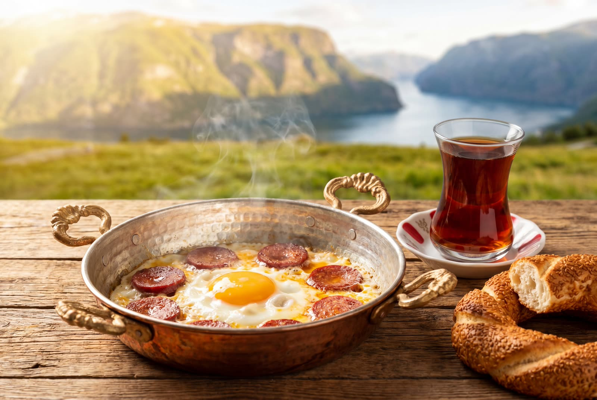

Lanseres snart i Norge
Norges første autentiske, lokalproduserte halal sucuk.
Tradisjonelt fermentert. Ferske norske råvarer. Ekte tyrkisk smak – til en rettferdig pris. Meld deg på ventelisten for å sikre deg din første smakebit når vi starter produksjonen.
100% Garantert Halal
Strenge halal-sertifiseringer i hvert ledd.
Produsert i Norge
Kortreist storfekjøtt fra lokale leverandører.
Tradisjonelt Fermentert
Langsom modning gir dyp, ekte smak.
Hvorfor betale overpris for importert sucuk?
I dag koster importert sucuk i Norge opp mot 370 kr/kg. Den reiser langt, ligger lenge på lager og mister sin ferskhet. Vi mener du fortjener noe bedre.
- Dyr import (ofte over 370 kr/kg).
- Lang transporttid og ukesvis på lager.
- Hurtigproduksjon på bekostning av tradisjonell smak.
- Lokal produksjon = Rettferdig, tilgjengelig pris.
- Ferske, norske råvarer fra anerkjent kjøttprodusent.
- Tradisjonell fermentering og autentisk krydderblanding.
Kompromissløs kvalitet
Tre løfter som aldri fravikes – fra råvare til ferdig sucuk.

Langtidsfermentert
Vi tar ingen snarveier. En ekte sucuk krever tid. Vi benytter tradisjonelle metoder for langsom fermentering, som gir den dype, komplekse smaken og den perfekte teksturen.
Premium Norsk Kjøtt
Produsert i Norge med ferskt, kortreist storfekjøtt av høyeste kvalitet. Vi samarbeider kun med de beste lokale leverandørene under strenge halal-sertifiseringer.
Autentisk Krydder
Vår hemmelige familieoppskrift benytter krydder importert direkte fra Tyrkia. Hvitløk, spisskummen og rød pepper i perfekt harmoni for den gjenkjennelige smaken.
Hjelp oss å bringe Ata Sucuk til live
Vi har oppskriften, produsenten og råvarene klare. Nå trenger vi kun å bevise at Norge er klart for en ekte premium sucuk. Meld din interesse i dag, helt uforpliktende.